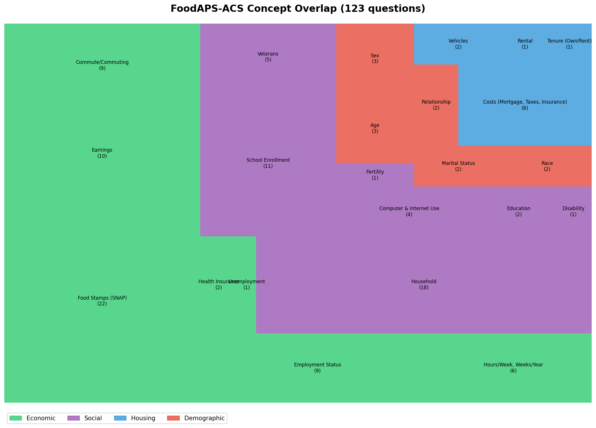
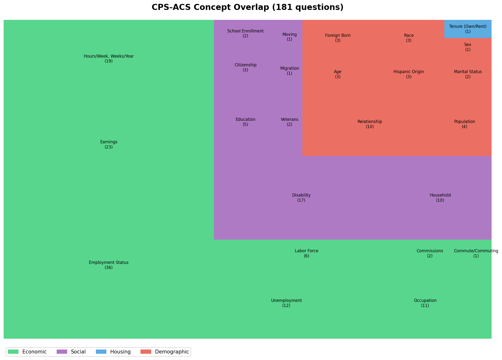

3 Concept-Level Overlap Visualization
3.1 Understanding the Treemaps
Before examining individual question pairs, we visualize where each survey’s overlap with ACS concentrates. These treemaps show:
- Box size: Number of questions in that subtopic sharing conceptual overlap with ACS
- Box color: Domain category (Economic, Social, Housing, Demographic)
- Labels: Subtopic name and question count
3.2 FoodAPS-ACS Concept Overlap

Key observations:
- SNAP dominates Economic domain (22 of 59 economic questions)
- FoodAPS was designed specifically for food assistance research
- This concentration creates many pairs but most are screener-vs-battery mismatches
- Household structure is significant (18 questions in Social)
- Understanding who lives together matters for food acquisition patterns
- These tend to consolidate well with ACS
- Demographics are sparse but important (12 questions)
- Basic demographics (age, sex, race) for each household member
- High consolidation potential - stable characteristics
- Housing is peripheral (10 questions)
- Mostly costs and vehicle access (relevant for food access)
- Not FoodAPS’s primary focus
3.3 CPS-ACS Concept Overlap

Key observations:
- Employment dominates (36 questions)
- Core CPS mission: monthly labor force statistics
- Many reference period mismatches with ACS’s “last week” framing
- Disability is substantial (17 questions in Social)
- CPS includes both work-limiting disability (Type A) and ACS6 functional questions (Type B)
- Construct mismatch is significant - same topic, different operationalization
- Demographics are richer than FoodAPS (29 questions)
- More detailed relationship, nativity, and migration questions
- Better consolidation potential
- Housing is minimal (1 question - tenure)
- CPS is not a housing survey
- Almost no housing overlap with ACS
3.4 What These Treemaps Tell Us
Concept overlap is necessary but not sufficient for consolidation.
The treemaps show WHERE overlap exists, but not WHETHER questions can substitute for each other. Consider:
| Subtopic | Concept Overlap | Consolidation Reality |
|---|---|---|
| SNAP (FoodAPS) | 22 questions | Only 2 consolidable (8.7%) - different reference periods, depths |
| Employment (CPS) | 36 questions | ~4 consolidable (11%) - reference period mismatches |
| Race (FoodAPS) | 2 questions | 2 consolidable (100%) - stable demographic |
| Disability (CPS) | 17 questions | 6 consolidable (35%) - only ACS6-compatible subset |
The gap between treemap area and consolidation potential IS the finding.
This gap reflects: 1. Reference period incompatibility 2. Construct differences (same concept, different operationalization) 3. Screener vs. battery design (breadth vs. depth)
The question-level analysis quantifies this gap precisely.
3.5 Interpreting Domain Colors
| Domain | Color | Typical Consolidation | Why |
|---|---|---|---|
| Economic | Green | 10-15% | Reference periods rarely align; surveys need different temporal granularity |
| Social | Purple | 20-40% | Mixed - household composition consolidates, disability depends on construct |
| Housing | Blue | 5-15% | Specialized needs; surveys focus on different housing aspects |
| Demographic | Red | 60-100% | Stable characteristics; standardized across surveys |
The demographic domain consistently shows highest consolidation potential because: - Characteristics don’t change between survey administrations - Constructs are standardized (OMB definitions for race/ethnicity) - No reference period complications (age, sex are point-in-time facts)
Economic and employment questions face the steepest barriers because: - Labor force status requires specific temporal windows - Different surveys need different windows for their analytical purposes - “Last week” ≠ “last 4 weeks” ≠ “last 12 months” - these serve different uses